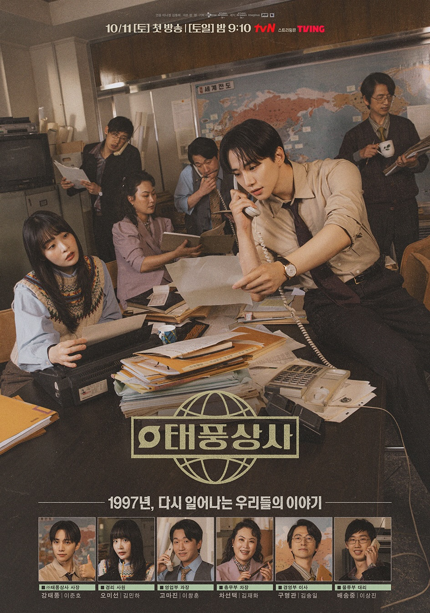

üî• Trending Now
Ms. Incognito
A female bodyguard from humble beginnings, who entered into a contract marriage with a terminally ill conglomerate chairman ...
More InfoWould You Marry Me?
Two strangers enter a 90-day fake marriage to claim a luxury townhouse prize...
More Info

Typhoon Family
Amid the 1997 financial crisis, a carefree son inherits his father's struggling business...
More InfoFirst Lady
Just two months before the president-elect is sworn in, he demands a divorce from his wife...
More InfoThe Dream Life Of Mr. Kim
After 25 years of success at one company, Manager Kim loses his job...
More Info
Moon River
A crown prince mysteriously swaps bodies with an ordinary merchant...
More Info
Dear X
Baek A Jin grew up enduring domestic violence, forcing her to hide her emotions and survive by reading and manipulating others...
More InfoTo The Moon
Three working-class women invest in cryptocurrency to.....
More Info